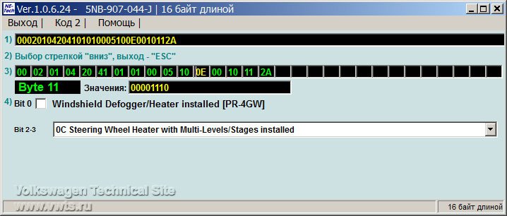
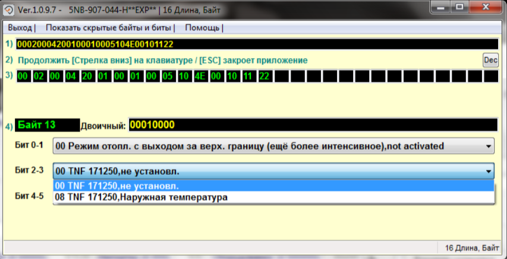
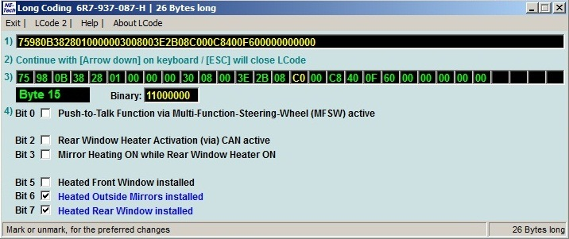

Управление климатической системой¶
Отображение скорости вращения вентилятора Климатроника в автоматическом режиме¶
Блок 08 → Кодирование
> Blower display during auto mode → активировать
11 байт - вместо значения 00001110 поставить значение 01001110 (6 бит → включить)
→ Применить (с перезагрузкой блока)
08 Электроника отопителя и климатической установки → Длинное кодирование
> Индикация режима вентилятора в автоматическом режиме:
Старое значение: не активир.
Новое значение: активир.
08 - Климат-контроль
Кодирование - 07 → Длинное кодирование
Байт 11 → Бит 6 → ставим галочку
Если нет 6 бита, можно изменить только сам код - вместо значения 00001110 поставить значение 01001110
Выход
Сохранить

Сохранение последней стадии нагрева передних сидений¶
Описание/Цель активации: Навсегда запоминает последнюю выбранную интенсивность обогрева сидения водителя. Просто удобная штука для более тонкой настройки автомобиля под себя.
Блок 08 → Адаптация
> Speicherung der Sitzheizungsstufe Fahrer (Retention of driver’s seat heater level) → активировать
→ Применить
> Speicherung der Sitzheizungsstufe Beifahrer активировать (Retention of passenger’s seat heater level) → активировать
→ Применить
08 Электроника отопителя и климатической установки → Адаптация
> Сохранение уровня нагрева сиденья водителя
Старое значение: акт. на 10 мин.
Новое значение: акт.
> Сохранение уровня нагрева сиденья переднего пассажира
Старое значение: не акт.
Новое значение: акт.
Автоматический Подогрев рулевого колеса в зависимости от наружной температуры воздуха¶
Важная информация
Для машин 2020 года данную кодировку можно выполнить в: - ODIS E 12 или ODIS S 6 версий - OBD11 При кодировании в старых версиях ODIS или VCDS подогрев руля перестает полностью работать
Существует 2 режима:
Lenkradtemperatur - по датчику в руле
Aussentemperatur - по датчику наружней температуры
Lenkradtemperatur - включается при зажигании, если рулевое колесо имеет низкую температуру. Актуально при движении на трассе
Aussentemperatur - работает всегда
Блок 8 → Кодирование
> Электроника отопителя и климатической установки / Heated_steering_wheel_automatic_mode
> Подогрев рулевого колеса, автоматический режим: «не установл» на нужное значение
→ Применить
08 Электроника отопителя и климатической установки → Длинное кодирование
> Подогрев рулевого колеса, автоматический режим
08 - Климат-контроль
Кодирование - 07 → Длинное кодирование
Байт 13 →
> Бит 2 - по датчику в руле
> Бит 3 - по наружней температуре
Одновременно оба бита включать нельзя!
Если выбора битов нет, то можно поменять значение самого байта: 14 (по датчику в руле) или 18 (по наружней температуре)
Выход
Сохранить

Подогрев зеркал вместе с задним стеклом (не для Tiguan)¶
Данная кодировка не работает для автомобилей Tiguan
Блок 09 → Кодирование
> Подогрев зеркал включен, пока включен обогрев заднего стекла
выбираем «Вкл»
→ Применить (с перезагрузкой блока)
09 - Электроника бортовой сети
Кодирование - 07 → Длинное кодирование
Байт 15 → Бит 3: Mirror Heating ON while Rear Window Heater ON
Выход
Сохранить

Подогрев зеркал вместе с задним стеклом (для Tiguan)¶
Включение подогрева зеркал вместе с подогревом заднего стекла независимо от положения джойстика управления зеркалами на водительской двери
Блок 52 → Кодирование
> Байт 9 → бит 2 (rear_window_heater_trigger) - not_active → active
Блок 42 → Кодирование
> Байт 9 → бит 2 (rear_window_heater_trigger) - not_active → active
Отображение подогрева зеркал отдельным пунктом в меню потребителей систем комфорта:
Блок 19 → Адаптация
> Efficiency_display
>> Convenience_consumption_mirror_heating_dependency → Independent_of_outside_temperature_without_switch
→ Применить
> Range_gain
>> Consumption_mirror_heating_in_heated_rear_window → active
Блок 19 → Адаптация
> Показ программы эффективности
>> Потребление систем комфорта, обогрев наружных зеркал заднего вида, зависимость → Независимо от наружней температуры без выключателя
> Увеличение запаса хода
>> Потребление обогрева наружных зеркал в обогреве заднего стекла → Включено
Увеличение температуры и времени обогрева переднего и заднего стекла¶
Вводимое значение измеряется в секундах, например 1200 / 60 = 20 (минут)
Изменение температуры и времени обогрева заднего стекла
Блок 09 → Адаптация
> Обогрев стекла
>> Heckscheibenheizung Zeitwert: с «320 с» на «640 с»
>> Abschalttemperatur fuer Heckscheibenheizung: с «35.0 °C» на «38.0 °C»
→ Применить
Изменение температуры и времени обогрева лобового стекла
Блок 09 → Адаптация
> Обогрев стекла
>> Frontscheibenheizung Zeitwert: «320 с» на «640 с»
>> Abschalttemperatur fuer Frontscheibenheizung: «35.0 °C» на «38.0 °C»
→ Применить
логин-пароль 31347
Активация Air Care Climatronic¶
Когда AirCare активен, система Climatronic начинает пропускать воздух через салонный фильтр в режиме рециркуляции совместно с подачей свежего воздуха снаружи. В результате этого воздух в салоне Вашего автомобиля очищается наиболее эффективно и его качество улучшается благодаря интенсивному отсеиванию мелких частиц.
Для функционирования этой опции рекомендуется использовать гипоаллергенный салонный фильтр. Он служит для эффективного отделения твердых частиц пыли и пыльцы, которые являются серьезной проблемой в городских условиях, особенно в весенне-осенний сезоны.
Для активации данного функционала потребуется:
- Блок Climatronic с ПО не ниже 1403;
- Блок Gateway с ПО не ниже 1244/2244;
- Блок Infotainment MIB (STD2/HIGH2) от 2016 г.в. (от 2017 м.г.);
Блок 08 → кодирование
> filtering_interior_air
выбираем installed
→ Применить (с перезагрузкой блока)
08 - Климат-контроль
Кодирование - 07 → Длинное кодирование
Байт 15 → Бит 5-6 → 20 Фильтрация воздуха салона, установл.
Выход
Сохранить
Автоматическое закрытие люка при дожде¶
VW Atlas
Блок 09 → Адаптация
> Access control 2
>> RegenschlieRen → permanently
>> RegenschlieRen → активировать
→ Применить
Блок 09 → Кодирование
>> подблок RLНS:
> 00 Байт → 1 бит 2 бит → включить
→ Применить
логин-пароль 31347